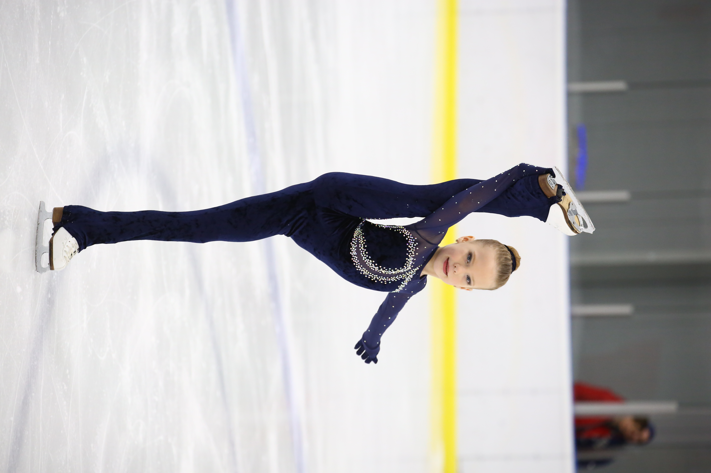
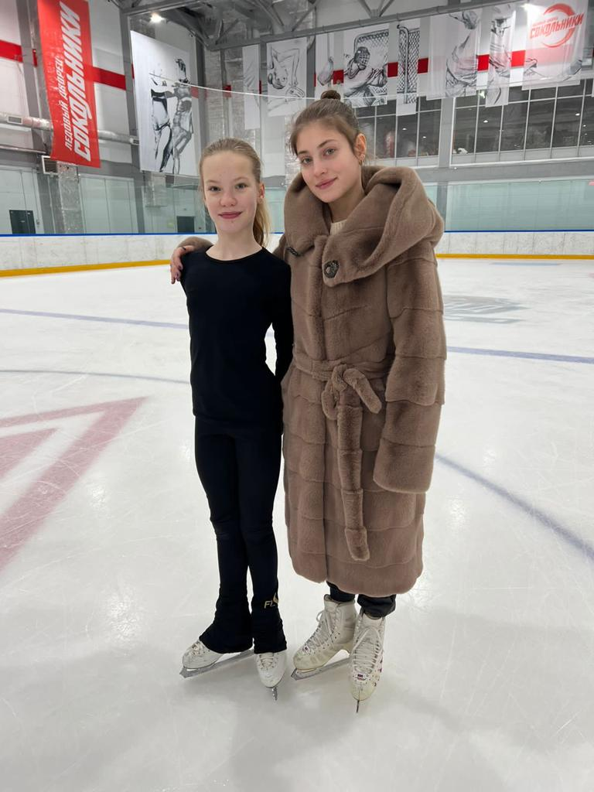
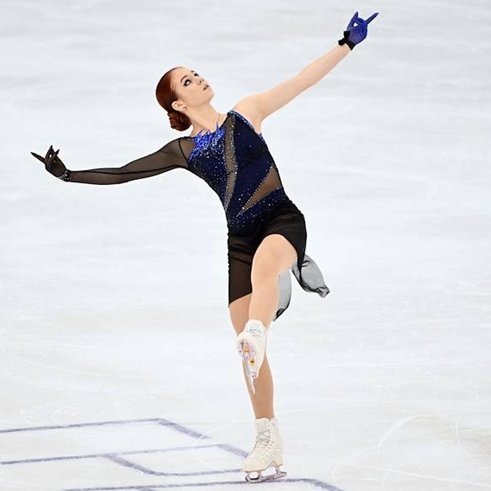
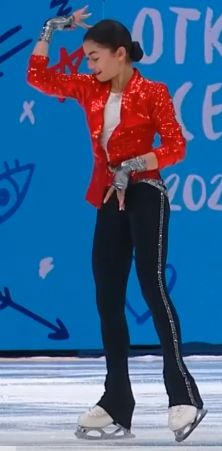
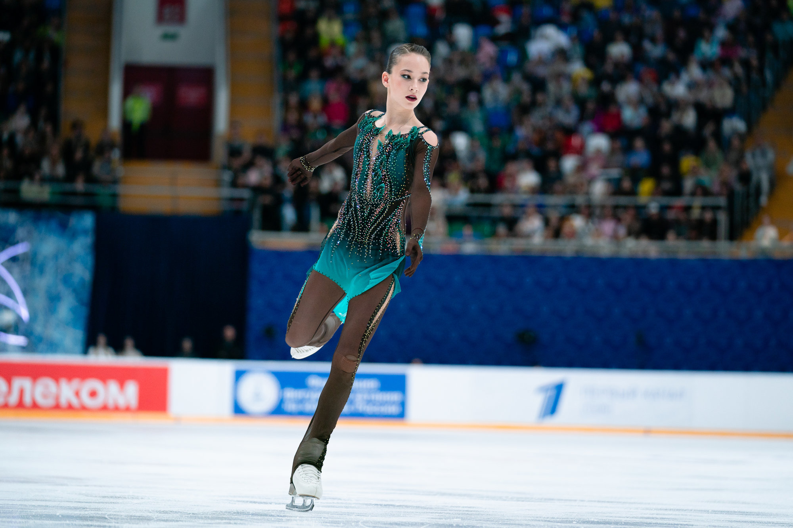
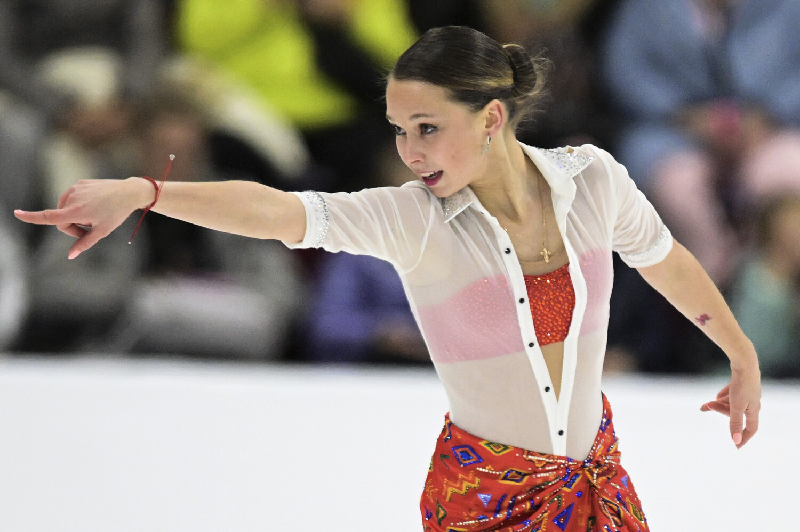

Фигурное катание
Contents: Фигурное катание 4 Факта о фигурном катании: Известные фигуристы
Фигурное катание
Это конькобежный вид спорта, относящийся к сложно координационным видам спорта. Основная идея заключается в передвижении спортсмена или пары спортсменов на коньках по льду с переменами направления скольжения и выполнении дополнительных элементов (вращений, прыжков, комбинаций шагов, поддержек и др.) под музыку.
.4 Факта о фигурном катании:
- Фигурное катание — один из старейших видов зимнего спорта, его история прослеживается более 3000 лет.
- Женское фигурное катание было включено в программу Олимпийских игр раньше мужского.
- Фигурное катание требует высокой физической подготовки, силы, гибкости и координации.
Известные фигуристы которых я знаю (дальше читайте,если интересно!)
1 - Я
 НЕ проффесионально я начала заниматься с 5 лет а встала я на коньки в 4 года,А проффесионально с семи лет и до сих пор. Я прыгаю все двойные прыжки и учу тройные.
2- Александра Трусова
Александра Трусова — российская фигуристка, заслуженный мастер спорта РФ (2022).
Родилась 23 июня 2004 года в Рязани.
- В начале 2010-х годов переехала с семьёй в Москву. Продолжила тренировки в отделении «Хрустальный» Центра спорта и образования «Самбо-70» под руководством Александра Волкова. С 2016 по 2020 год занималась там же в группе заслуженного тренера РФ Этери Тутберидзе. В 2020–2021 годах тренировалась в Академии фигурного катания Евгения Плющенко, после чего вернулась в группу Этери Тутберидзе. В январе 2018 года в Саранске и в январе 2019 года в Перми Александра Трусова становилась победительницей юниорского чемпионата России.
- В марте 2018 года в Софии (Болгария) заняла первое место на юниорском чемпионате мира. В марте 2019 года в Загребе (Хорватия) повторила это достижение.
- В декабре 2018 года в Саранске Александра Трусова завоевала серебро чемпионата России.
- В декабре 2019 года в Красноярске и в декабре 2020 года в Челябинске становилась бронзовой медалисткой первенства страны.
- В декабре 2021 года на чемпионате России в Санкт-Петербурге заняла второе место.
- В январе 2020 года в Граце (Австрия) стала бронзовой медалисткой чемпионата Европы. В январе 2022 года в Таллине (Эстония) повторила этот результат.
- В марте 2021 года в Стокгольме (Швеция) Александра Трусова завоевала бронзу чемпионата мира.
- В феврале 2022 года стала серебряной медалисткой XXIV зимней Олимпиады в Пекине (Китай).
- Александра Трусова занимает 43-е место в рейтинге Международного союза конькобежцев.
3- Аделия Пертосян
Аделия Тиграновна Петросян — российская фигуристка, выступающая в одиночном катании.
Родилась 5 июня 2007 года в Москве.
- чемпионка России (2024);
- победительница финала Гран-при России (2023);
- бронзовый призёр чемпионата России (2022);
- обладательница двух медалей юниорской серии Гран-при: золото этапа в Словении 2021 года и бронза этапа в Словакии 2021 года;
- серебряный призёр первенства России среди юниоров (2021);
- серебряный призёр чемпионата России по прыжкам (2024).
- По состоянию на 25 декабря 2023 года занимает 160-е место в рейтинге Международного союза конькобежцев.
4-Софья Акатьева
Софья Дмитриевна Акатьева — российская фигуристка, выступающая в одиночном катании.
Родилась 7 июля 2007 года в Москве.
Чемпионка России (2023), бронзовый призёр финала Гран-при России сезона 2022/2023.
Среди юниоров — обладательница мировых рекордов по сумме баллов и в произвольной программе.
- Обладательница двух медалей юниорской серии Гран-при ISU: золото этапа в России 2021 года и золото этапа в Польше 2021 года.
- Двукратная победительница первенства России (2021, 2022) и серебряный призёр первенства России (2020) среди юниоров. Победительница этапа Гран При России «Золотой конёк Москвы» 2022.
- Серебряный призёр чемпионата России по прыжкам (2023).
- Первая фигуристка в истории, выполнившая в одной программе на международных соревнованиях 3 четверных прыжка и тройной аксель.
- По состоянию на 24 сентября 2022 года занимает 61-е место в рейтинге Международного союза конькобежцев.
4-Ксения Синицына
Родилась 5 августа 2004 года в Твери.
Ксения Синицына — российская фигуристка, выступающая в одиночном катании.
- Бронзовый призёр чемпионата России (2024);
- Чемпионка юношеских Олимпийских игр (2020, командный турнир);
- Cеребряный призёр юношеских Олимпийских игр (2020, одиночное катание);
- Мастер спорта России по фигурному катанию на коньках (2020).
- По состоянию на 6 декабря 2022 года занимает 83-е место в рейтинге Международного союза конькобежцев.